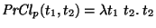
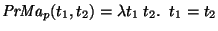
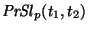
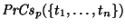

Just as data evolves over time, properties can also be added and (logically) deleted.
A property may be added to a label at any time.
For all existing labels, the new property is simply missing.
When a label is subsequently inserted or updated,
the new property can be used as needed.
Each property consists of a
unique name, a domain or type,
and four operations:
 (collapse),
(collapse),
 (match),
(match),
 (slice), and
(slice), and
 (coalesce).
A database designer adds this information
to the semantics of properties,
(coalesce).
A database designer adds this information
to the semantics of properties,  ,
within DB.
For most properties, the default semantics for operations
given below will suffice.
,
within DB.
For most properties, the default semantics for operations
given below will suffice.
[Default property semantics]
Let t1 and t2 be any values for the property.
properties are by default collapsed to the second since paths are collapsed top-down, from a root to a leaf. The ``closest'' or most recent property to a leaf is taken to be the relevant property. Consider a URL property that gives the URL at which a datum resides. The URL of the page that contains the datum is more relevant than the URL of a parent page, and this is exactly what is computed by the default collapse constructor. Two properties match only if they are equal. No defaults are provided for and


= Semantic Error

= Semantic Error `2
A property can be deleted by removing the property semantics
from  .
Although existing labels in the data store will mention the
property, the property is ignored in all subsequent operations
(except for labels with a required property in the deleted
property, which will fail to match any subsequent query).
To save space, and remove required properties, the property should
also be deleted from each edge, but this might be costly and disruptive.
.
Although existing labels in the data store will mention the
property, the property is ignored in all subsequent operations
(except for labels with a required property in the deleted
property, which will fail to match any subsequent query).
To save space, and remove required properties, the property should
also be deleted from each edge, but this might be costly and disruptive.
This simple support for properties can be enhanced by maintaining a history of property insertions and deletions as meta-meta-data. This can be accomplished by using name and transaction time properties within each label in the meta-data. Then previous database states can be queried with the properties available as of that previous state, but this issue of transaction time support for property changes is beyond the scope of this paper.